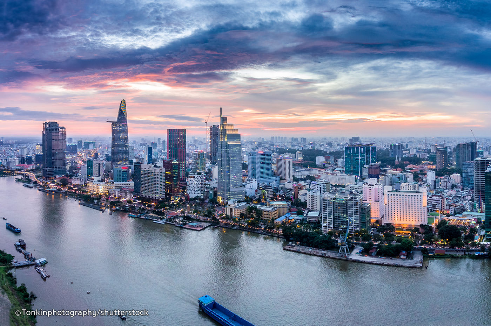
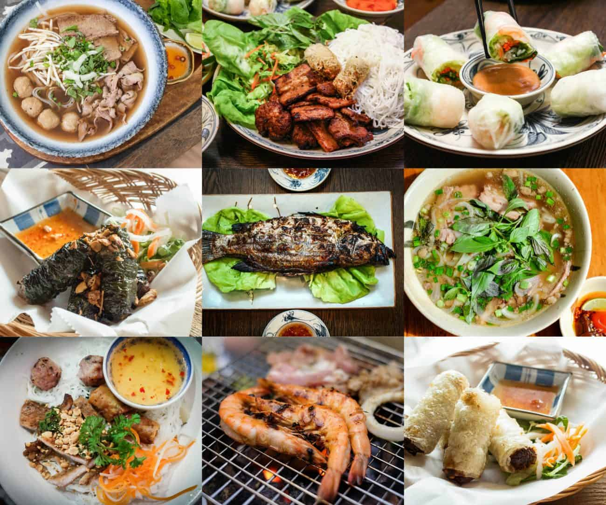
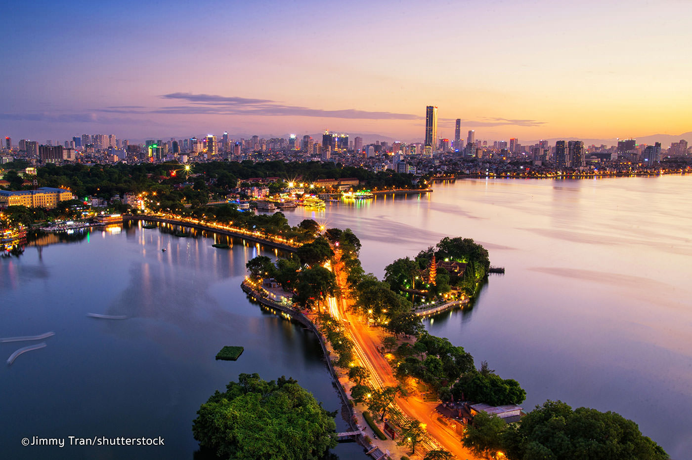
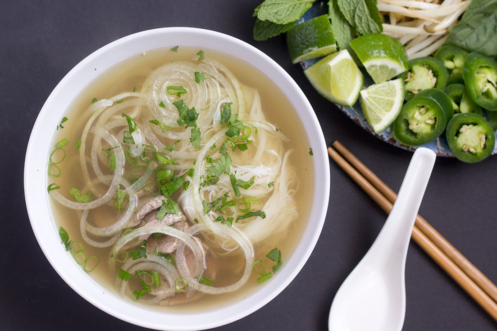
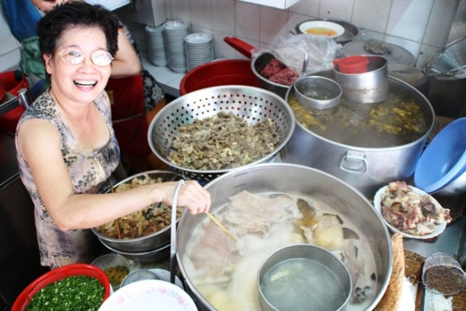

Jacques' Travel Blog ✈
Welcome to Jacques' Travel Blog, JTB. I am Jake Vu and I will take you, through your computer screen, around the world and discover the hidden beauty of our world. How cool is that!
VIETNAM
Ho Chi Minh City
Ho Chi Minh City (commonly known as Saigon) is a city in southern Vietnam famous for the pivotal role it played in the Vietnam War. It's also known for its French colonial landmarks, including Notre-Dame Cathedral, made entirely of materials imported from France, and the 19th-century Central Post Office. Food stalls line the city’s streets, especially around bustling Ben Thanh Market.
Here are some things you can do in Ho Chi Minh City:
For Leisure

One of the things that Vietnamese do is casually sit at a coffee shop and drink their coffee for hours. I bet your Starbucks barista won't mind, it's part of the culture ;)
Copyright @JacquesLumiere
Hungry?
What makes Vietnamese food so special? You can't un-smell the fresh herbs and pungent fish sauce in just about every dish. Each dish could really have its own bottled fragrance.
Hanoi
Hanoi, the capital of Vietnam, is known for its centuries-old architecture and a rich culture with Southeast Asian, Chinese and French influences. At its heart is the chaotic Old Quarter, where the narrow streets are roughly arranged by trade. There are many little temples, including Bach Ma, honoring a legendary horse, plus Dong Xuan Market, selling household goods and street food.
Let's explore some of Vietnam's delicacies!
Pho
Pho is a Vietnamese soup consisting of broth, rice noodles called banh pho, a few herbs, and meat, primarily made with either beef or chicken. Pho is a popular street food in Vietnam and the specialty of a number of restaurant chains around the world.
Process of Making Pho
The broth for beef pho is generally made by simmering beef bones, oxtails, flank steak, charred onion, charred ginger and spices. For a more intense flavor, the bones may still have beef on them. Chicken bones also work and produce a similar broth. A smile also adds to the flavor :D
Let's go back to the top!